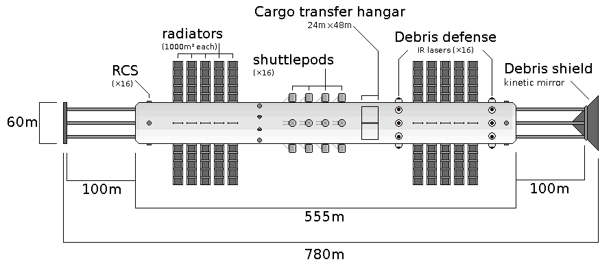

this page is work in progress
link to this page
Orionid InterStellar Vehicle
 The Orionid ISV is a vessel designed for one-way trips to distant cosmic locations, with the ability to travel at up to 98% of the speed of light.
The Orionid ISV is a vessel designed for one-way trips to distant cosmic locations, with the ability to travel at up to 98% of the speed of light.
The initial launch happens with the use of magnetic sails and a launch platform equipped with 300 petawatts worth of ion beams, capable of exerting up to 1 giganewton of force on a vessel equipped with magnetic sails.
The vessel can be accelerated all the way up to 92% of the speed of light in 43 megaseconds, and would have made it about one third of the way through the oort cloud by the time that the acceleration stops.
If the acceleration continues for 110Ms, the vessel will reach 0.98c and be all the way outside of the oort cloud by the time that the acceleration stops.
The magnetic sail is also used to slow down at the end by deflecting interplaneraty medium of the target system, dissipating velocity down to about 1% of the speed of light, and the rest of the slowdown is done using the pulsed propulsion drive.
It is expected that most systems will have become nonfunctional due to erosion and general decay by the time of arrival, in fact most likely the vessel will not be able to perform the slowdown due to damage sustained during the journey.
It has a very low survival rate, thus is meant to be launched in groups of hundreds to millions towards the same location in the hopes that at least a single one will be able to perform the braking and in-situ development as intended.

The Orionid ISV is a one-way interstellar vessel relying on a magnetic sail combined with a pulsed nuclear propulsion drive in the style of project orion.
The vessel is initially propelled by an ion beam that is caught by the vessel's magnetic sail, allowing it to be accelerated almost arbitrarily close to the speed of light.
While in travel it is protected by its orion drive, but faces a constant risk of collision that has a chance to destroy the vessel - this risk grows with distance and velocity of travel.
The magnetic sail interacts with the interplanetary medium upon arrival to the destination star, allowing the vessel to slow down to about 1% of the speed of light, and then complete the slowdown with it's orion drive.
The fuel used for the pulsed drive is antimatter sequestered in buckminsterfullerenes, which allows the propulsion units to be made much smaller while delivering even more impulse to the spacecraft.
The bomblets used by the pulsed propulsion drive contain about 1% antiproton endofullerenes, resulting in an exhaust velocity of roughly 1.116Mm/s.
At 10% of the speed of light it has a 98.5% survival chance on a trip from sol to alpha centauri.
At 90% of the speed of light the survival chance is 43.1%
At 99% of the speed of light the survival chance is 14%
At 99.9% it is 4.4%
Torpensoor had already launched 103 of them towards alpha centauri, and had been launching these by the thousands towards the spider globular cluster, 6000 light years away, at 99.9% of the speed of light, giving each vessel about 0.00000004993430735 probability of survival.
The number of vessels should be about 20.03 million for a single one to survive the journey on average.
Each million vessels launched carries a 95.12919141% chance that none of them will make it, thus 60 million vessels will be needed to achieve a 95% probability of success, and 92.3 million for a 99% success chance.
This is a very brute force approach, being practically just the reproductive strategy of having lots of offspring and counting on a few of them surviving, but nature had already proven that this works even before life left earth.
These vessels do not however carry the mind of Torpensoor, as it is simply too large to fit within one of such vessels.
Instead, these vessels are largely loaded with UEIA teams and sometimes volunteers, most notably ITON who had been very eager to sign up for nearly every launch.
The actual survival probability of the vessel is well described by the equation:
P = sqrt(1−(v/c)^2))×0.99^(d/4.4ly)
where:
P is the probability of survival
v is the velocity the vessel is launched with
d is the distance from launch site to target
This means that at short ranges the survival chance is determined primarily by speed, and at long ranges the survival chance is determined primarily by distance.
For 99.9% lightspeed expansion, 50% success chance ranges are:
with 1 thousand vessels: 1663ly
with 1 million vessels : 4680ly
with 1 billion vessels : 7700ly
with 1 trillion vessels: 10736ly
For 99% lightspeed expansion, 50% success chance ranges are:
with 1 thousand vessels: 2166ly
with 1 million vessels : 5190ly
with 1 billion vessels : 8215ly
with 1 trillion vessels: 11239ly
Numerical characteristics of the vessel:
Fully loaded mass: 92000 tonnes
Mass of fuel carried: 54 500 tonnes
Dry mass with payload: 37 500 tonnes
Diameter: 60m
Length: 780m